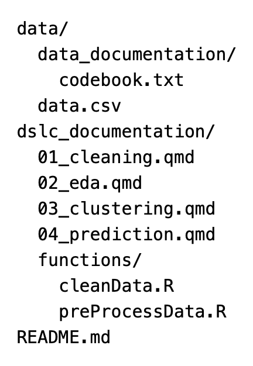

import os
import numpy as np
import pandas as pd
from matplotlib import pyplot as plt
import seaborn as sns
import arviz as az
from pathlib import Path14 Le fasi del progetto di analisi dei dati
Prerequisiti
- Leggere Veridical Data Science (Yu e Barter 2024) focalizzandoti sul primo capitolo, che introduce le problematiche della data science, e sul quarto capitolo, che fornisce le linee guida dettagliate sull’organizzazione di un progetto di analisi dei dati.
Concetti e competenze chiave
- Ciclo di vita del progetto (DSLC): Definizione chiara della domanda di ricerca, raccolta dati esistenti o nuovi, pulizia, analisi esplorativa e inferenziale, valutazione e comunicazione dei risultati.
- Organizzazione del progetto di analisi dei dati: Strutturazione efficiente dei file per garantire portabilità e condivisione.
Preparazione del Notebook
RANDOM_SEED = 42
rng = np.random.default_rng(RANDOM_SEED)
sns.set_theme(palette="colorblind")
az.style.use("arviz-darkgrid")
%config InlineBackend.figure_format = 'retina'14.1 Introduzione
Seguendo Yu e Barter (2024), in questo capitolo introdurremo l’analisi esplorativa dei dati situandola all’interno dell’intero ciclo di vita di un progetto di data science (DSLC). Secondo Yu e Barter (2024), ogni progetto di analisi dei dati segue una combinazione delle seguenti fasi:
- Formulazione del problema e raccolta dei dati.
- Pulizia dei dati, preprocessing e analisi esplorativa.
- Analisi predittiva e/o inferenziale.
- Valutazione dei risultati.
- Comunicazione dei risultati.
Mentre quasi tutti i progetti di data science attraversano le fasi 1-2 e 4-5, non tutti includono la fase 3.
14.2 Fase 1: Formulazione del Problema e Raccolta dei Dati
La formulazione di una domanda di ricerca precisa è il punto di partenza di ogni progetto di data science. È cruciale che la domanda sia formulata in modo tale da poter essere risolta attraverso l’analisi dei dati disponibili. Alle volte la domanda iniziale è troppo vaga o non risolvibile. L’obiettivo è riformulare la domanda in modo tale che possa trovare una risposta utilizzando i dati a disposizione.
14.2.1 Raccolta dei Dati
Alcuni progetti utilizzano dati esistenti (da repository pubblici, database interni o esperimenti passati), mentre altri richiedono la raccolta di nuovi dati. Ogni volta che è possibile, è necessario avere ben chiaro quali analisi statistiche verranno svolte prima di raccogliere i dati. Se questo non viene fatto, può succedere che i dati raccolti non siano adeguati per rispondere alle domande di interesse, in quanto mancano informazioni cruciali, o vengono violate assunzioni richieste dai modelli statistici che si vogliono impiegare.
È fondamentale sviluppare una comprensione approfondita dei processi di acquisizione dei dati e del significato delle misure ottenute. Parallelamente, è cruciale essere pienamente consapevoli degli strumenti e delle metodologie impiegate nella raccolta dei dati. In altri termini, è essenziale riconoscere e valutare i potenziali bias che possono emergere dalle tecniche e dalle procedure adottate durante il processo di raccolta dati.
14.2.2 Terminologia dei Dati
In una matrice di dati (comunemente denominata “dataset”), ogni colonna rappresenta una diversa tipologia di misurazione, definita come variabile, carattere o attributo. In alcuni contesti, specialmente nell’analisi di regressione, queste possono essere anche chiamate covariate.
Generalmente, le variabili in un dataset si classificano in una delle seguenti categorie:
Quantitative:
- Continue: Valori che possono assumere qualsiasi numero reale all’interno di un intervallo (es. importo di spesa, durata di permanenza su un sito web).
- Discrete: Valori numerici interi, spesso risultato di conteggi (es. numero di visitatori di un sito web in un determinato periodo, numero di esemplari di una specie in una data località).
Qualitative (o Categoriche):
- Nominali: Categorie senza un ordine intrinseco (es. partito politico, reparto ospedaliero, nazione).
- Ordinali: Categorie con un ordine naturale ma senza una metrica definita tra i livelli (es. livello di istruzione, grado di soddisfazione).
Temporali: Date e orari in vari formati (es. “01/01/2020 23:00:05” o “1 gen 2020”).
Testuali:
- Strutturate: Testo con formato predefinito (es. nominativo, indirizzo postale, email).
- Non strutturate: Corpo di testo esteso senza struttura predefinita (es. cartelle cliniche, recensioni, post sui social media).
La dimensionalità dei dati si riferisce al numero di variabili (colonne) presenti nel dataset. Si parla di “dati ad alta dimensionalità” quando il numero di variabili è elevato (generalmente superiore a 100, sebbene non esista una soglia universalmente accettata).
Ogni riga del dataset corrisponde a una singola unità statistica, anche detta caso o osservazione. Queste rappresentano le entità su cui vengono effettuate le misurazioni.
Questa struttura, in cui i dati sono organizzati in colonne (variabili) e righe (unità statistiche), viene definita come matrice dei dati o, in ambito informatico, come formato tabellare.
14.3 Fase 2: Pulizia dei Dati e Analisi Esplorativa
14.3.1 Pulizia dei Dati
Dopo aver definito la domanda della ricerca e avere raccolto i dati rilevanti, è il momento di pulire i dati. Un dataset pulito è ordinato, formattato in modo appropriato e ha voci non ambigue. La fase iniziale di pulizia dei dati consiste nell’identificare problemi con i dati (come formattazioni anomale e valori non validi) e modificarli in modo che i valori siano validi e formattati in modo comprensibile sia per il computer che per noi. La pulizia dei dati è una fase estremamente importante di un progetto di data science perché non solo aiuta a garantire che i dati siano interpretati correttamente dal computer, ma aiuta anche a sviluppare una comprensione dettagliata delle informazioni contenute nei dati e delle loro limitazioni.
L’obiettivo della pulizia dei dati è creare una versione dei dati che rifletta nella maniera più fedele possibile la realtà e che sia interpretata correttamente dal computer. Per garantire che il computer utilizzi fedelmente le informazioni contenute nei dati, è necessario modificare i dati (scrivendo codice, non modificando il file dati grezzo stesso) in modo che siano in linea con ciò che il computer “si aspetta”. Tuttavia, il processo di pulizia dei dati è necessariamente soggettivo e comporta fare assunzioni sulle quantità reali sottostanti misurate e decisioni su quali modifiche siano le più sensate.
14.3.2 Preprocessing
Il preprocessing si riferisce al processo di modifica dei dati puliti per soddisfare i requisiti di un algoritmo specifico che si desidera applicare. Ad esempio, se si utilizza un algoritmo che richiede che le variabili siano sulla stessa scala, potrebbe essere necessario trasformarle, oppure, se si utilizza un algoritmo che non consente valori mancanti, potrebbe essere necessario imputarli o rimuoverli. Durante il preprocessing, potrebbe essere utile anche definire nuove caratteristiche/variabili utilizzando le informazioni esistenti nei dati, se si ritiene che queste possano essere utili per l’analisi.
Come per la pulizia dei dati, non esiste un unico modo corretto per pre-elaborare un dataset, e la procedura finale comporta tipicamente una serie di decisioni che dovrebbero essere documentate nel codice e nei file di documentazione.
14.3.3 Analisi Esplorativa dei Dati
Dopo l’acquisizione dei dati, si procede con un’analisi approfondita che si articola in due fasi principali:
Analisi Esplorativa dei Dati (EDA - Exploratory Data Analysis):
Questa fase iniziale mira a far familiarizzare il ricercatore con il dataset e a scoprire pattern nascosti. Si realizza attraverso:
- La costruzione di tabelle di frequenza e contingenza
- Il calcolo di statistiche descrittive (come indici di posizione, dispersione e forma della distribuzione)
- La creazione di rappresentazioni grafiche preliminari
L’EDA permette di generare ipotesi sui dati e di guidare le successive analisi statistiche.
Analisi Esplicativa:
In questa fase successiva, l’obiettivo è raffinare e perfezionare le analisi per comunicare efficacemente i risultati a un pubblico più ampio. Ciò comporta:
- L’ottimizzazione delle tabelle per una maggiore leggibilità
- Il perfezionamento delle visualizzazioni grafiche per una comunicazione chiara ed efficace
- La selezione delle statistiche più rilevanti per supportare le conclusioni
L’analisi esplicativa si concentra sulla presentazione chiara e convincente dei risultati, adattando il livello di dettaglio e il linguaggio al pubblico di riferimento.
Entrambe le fasi sono cruciali: l’EDA consente di comprendere a fondo la struttura e le caratteristiche dei dati, mentre l’analisi esplicativa assicura che le scoperte siano comunicate in modo efficace e comprensibile.
14.4 Fase 3: Analisi Predittiva e Inferenziale
Molte domande nella data science si presentano come problemi di inferenza e/o previsione, in cui l’obiettivo principale è utilizzare dati osservati, passati o presenti, per descrivere le caratteristiche di una popolazione più ampia o per fare previsioni su dati futuri non ancora disponibili. Questo tipo di analisi è spesso orientato a supportare decisioni nel mondo reale.
Nel corso, ci concentreremo principalmente sull’approccio bayesiano per affrontare questi problemi inferenziali, fornendo un’introduzione a come tale prospettiva possa essere applicata efficacemente in questo contesto.
14.5 Fase 4: Valutazione dei Risultati
In questa fase, i risultati ottenuti vengono analizzati alla luce della domanda di ricerca iniziale. Si procede a una valutazione sia quantitativa, attraverso l’applicazione di tecniche statistiche appropriate, sia qualitativa, attraverso un’attenta riflessione critica.
14.6 Fase 5: Comunicazione dei Risultati
L’ultima fase di un progetto di analisi dei dati consiste nel condividere i risultati con un pubblico più ampio, il che richiede la preparazione di materiali comunicativi chiari e concisi. L’obiettivo è trasformare i risultati dell’analisi in informazioni utili per supportare il processo decisionale. Questo può includere la stesura di un articolo scientifico, la creazione di un report per un team di lavoro, o la preparazione di una presentazione con diapositive.
La comunicazione deve essere adattata al pubblico di riferimento. Non si deve dare per scontato che il pubblico abbia familiarità con il progetto: è fondamentale spiegare l’analisi e le visualizzazioni in modo chiaro e dettagliato. Anche se per il ricercatore il messaggio principale di una figura o diapositiva può sembrare ovvio, è sempre una buona pratica guidare il pubblico nella sua interpretazione, evitando l’uso di gergo tecnico complesso.
14.7 Organizzazione del Progetto
Un requisito fondamentale per un progetto di analisi dei dati è organizzare in modo efficiente i file sul proprio computer. Questo include i file dei dati, il codice e la documentazione del progetto. Tutti questi elementi dovrebbero essere raccolti all’interno di una singola cartella dedicata al progetto. Yu e Barter (2024) propone il seguente template per la struttura di un progetto:

Le due cartelle principali sono:
data/: contiene il dataset grezzo (ad esempio,data.csv) e una sottocartella con documentazione relativa ai dati, come metadati e codebook.dslc_documentation/: raccoglie i file di documentazione e codice necessari per le varie fasi del progetto. Questi possono essere file .qmd (per Quarto, in R) o .ipynb (per Jupyter Notebook, in Python), utilizzati per condurre ed esplorare le analisi. I file sono prefissati da un numero per mantenerli in ordine cronologico. All’interno di questa cartella, è presente una sottocartellafunctions/, che contiene script .R (per R) o .py (per Python) con funzioni utili per le diverse analisi.
Un file README.md descrive la struttura del progetto e riassume il contenuto di ogni file.
Un’organizzazione come quella proposta da Yu e Barter (2024) offre un notevole vantaggio: permette di specificare i percorsi dei file in modo relativo, utilizzando come radice la cartella del progetto. Questo rende il progetto facilmente trasferibile e condivisibile tra diversi utenti o computer.
Esempio 14.1 Per esplorare come gestire l’archiviazione dei dati sul computer e importarli in Python, consideriamo i dati raccolti da Zetsche, Buerkner, e Renneberg (2019) in uno studio che ha esaminato le aspettative negative come meccanismo chiave nel mantenimento della depressione. In questo studio, i ricercatori hanno confrontato 30 soggetti con episodi depressivi a un gruppo di controllo di 37 individui sani, utilizzando il Beck Depression Inventory (BDI-II) per valutare i livelli di depressione.
Il file CSV contenente questi dati, così come tutti gli altri file utilizzati in questa dispensa, è memorizzato nella cartella data, situata all’interno della cartella psicometria, che rappresenta la directory principale del progetto.
Con le istruzioni seguenti, viene specificato il percorso della directory principale del progetto in relazione alla mia directory personale:
# Get the home directory
home_directory = os.path.expanduser("~")
# Construct the path to the Quarto project directory
project_directory = os.path.join(home_directory, "_repositories", "psicometria")
print(project_directory)/Users/corradocaudek/_repositories/psicometriaDopo aver definito project_directory come directory principale, è possibile indicare il percorso del file CSV contenente i dati in modo relativo a project_directory.
# Definire il percorso del file CSV
file_path = os.path.join(project_directory, "data", "data.mood.csv")
print(file_path)/Users/corradocaudek/_repositories/psicometria/data/data.mood.csvLa seguente istruzione permette di importare i dati dal file data.mood.csv in un DataFrame di pandas.
df = pd.read_csv(file_path)Per conoscere le dimensioni del DataFrame utilizziamo il metodo .shape.
df.shape(1188, 44)Il DataFrame ha 1188 righe e 44 colonne. Visualizziamo il nome delle colonne con il metodo .columns.
df.columnsIndex(['Unnamed: 0', 'vpn_nr', 'esm_id', 'group', 'bildung', 'bdi',
'nr_of_episodes', 'nobs_mood', 'trigger_counter', 'form', 'traurig_re',
'niedergeschlagen_re', 'unsicher_re', 'nervos_re', 'glucklich_re',
'frohlich_re', 'mood_sad.5', 'mood_fearful.5', 'mood_neg.5',
'mood_happy.5', 'cesd_sum', 'rrs_sum', 'rrs_brood', 'rrs_reflect',
'forecast_sad', 'forecast_fear', 'forecast_neg', 'forecast_happy',
'recall_sad', 'recall_fear', 'recall_neg', 'recall_happy',
'diff_neg.fore.5', 'diff_sad.fore.5', 'diff_fear.fore.5',
'diff_happy.fore.5', 'diff_neg.retro.5', 'diff_sad.retro.5',
'diff_fear.retro.5', 'diff_happy.retro.5', 'mood_sad5_tm1',
'mood_neg5_tm1', 'mood_fearful5_tm1', 'mood_happy5_tm1'],
dtype='object')Dato che il DataFrame è troppo grande (1188 righe e 44 colonne), stampiamo sullo schermo solo le prime 5 righe.
df.head()| Unnamed: 0 | vpn_nr | esm_id | group | bildung | bdi | nr_of_episodes | nobs_mood | trigger_counter | form | ... | diff_fear.fore.5 | diff_happy.fore.5 | diff_neg.retro.5 | diff_sad.retro.5 | diff_fear.retro.5 | diff_happy.retro.5 | mood_sad5_tm1 | mood_neg5_tm1 | mood_fearful5_tm1 | mood_happy5_tm1 | |
|---|---|---|---|---|---|---|---|---|---|---|---|---|---|---|---|---|---|---|---|---|---|
| 0 | 1 | 101 | 10 | mdd | abitur | 25.0 | 2.0 | 14 | 5 | Forecasting | ... | 0.333333 | -1.000000 | 0.250000 | 0.166667 | 0.333333 | -1.000000 | NaN | NaN | NaN | NaN |
| 1 | 2 | 101 | 10 | mdd | abitur | 25.0 | 2.0 | 14 | 6 | Forecasting | ... | -0.666667 | -0.333333 | -0.416667 | -0.166667 | -0.666667 | -0.333333 | 3.333333 | 3.000000 | 2.666667 | 3.000000 |
| 2 | 3 | 101 | 10 | mdd | abitur | 25.0 | 2.0 | 14 | 7 | Forecasting | ... | 0.666667 | -0.666667 | 1.250000 | 1.833333 | 0.666667 | -0.666667 | 3.666667 | 3.666667 | 3.666667 | 2.333333 |
| 3 | 4 | 101 | 10 | mdd | abitur | 25.0 | 2.0 | 14 | 8 | Forecasting | ... | -0.333333 | -0.666667 | 0.083333 | 0.500000 | -0.333333 | -0.666667 | 1.666667 | 2.000000 | 2.333333 | 2.666667 |
| 4 | 5 | 101 | 10 | mdd | abitur | 25.0 | 2.0 | 14 | 10 | Forecasting | ... | 0.333333 | -1.000000 | 0.416667 | 0.500000 | 0.333333 | -1.000000 | 3.000000 | 3.166667 | 3.333333 | 2.666667 |
5 rows × 44 columns
14.8 Informazioni sull’Ambiente di Sviluppo
%load_ext watermark
%watermark -n -u -v -iv -w -mLast updated: Thu Aug 01 2024
Python implementation: CPython
Python version : 3.12.4
IPython version : 8.26.0
Compiler : Clang 16.0.6
OS : Darwin
Release : 23.6.0
Machine : arm64
Processor : arm
CPU cores : 8
Architecture: 64bit
arviz : 0.18.0
matplotlib: 3.9.1
pandas : 2.2.2
seaborn : 0.13.2
numpy : 1.26.4
Watermark: 2.4.3